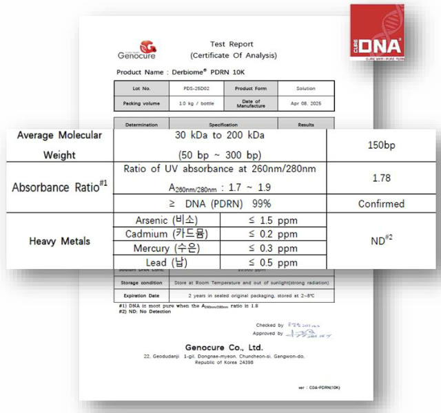
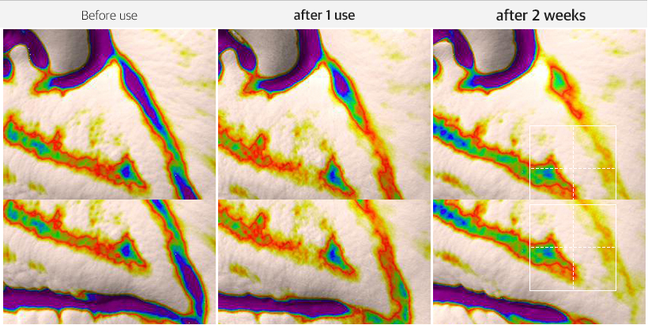
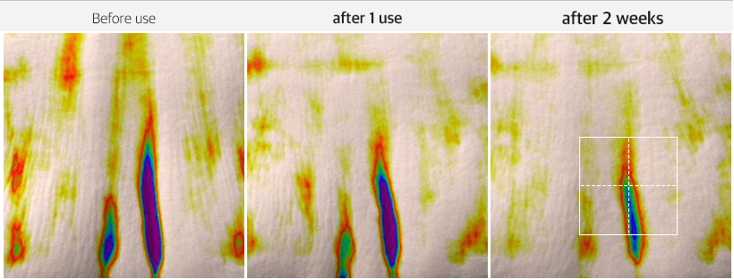

PDRN Lift Cream · 20,000 ppm salmon DNA PDRN.
From Korean clinics and pharmacies.


10,000 ppm PDRN with niacinamide and ceramide.
Chum salmon from Korea, backed by a certificate of origin.
¹ Genocure certificate of analysis, Derbiome PDRN, April 2025. Chum salmon origin: Genocure certificate of origin, February 2023.

Certificate of analysis Certificate of origin
Certificate of originNasolabial folds · PDRN Lift Cream

Forehead wrinkles · PDRN Lift Cream

Moisture level in the 10th layer of the stratum corneum after one use.
Nasolabial folds decreased by 32.39% after 2 weeks.
Forehead wrinkles decreased by 20.50% after 2 weeks.
Korea Dermatology Research Institute, 2024.12.04–2025.01.09, 22 adult women aged 42–66. Individual results may vary.
“PYDERIN fits the way we care for our patients.”
Dr. Sangwook Park · Medical Director, Seorae Cell Clinic“The key to a PDRN formula is high purity and the right molecular size.”
Dr. Jungbin Kim · Dermatologist, Cheongdam JeunEx Clinic“With anything you put on your skin, what matters most is where the ingredients come from and how it’s made.”
Pharmacist · Jeil Grand Onnuri PharmacyPYDERIN partner clinics. ² Company figure reported by Dailypharm, July 22, 2026.